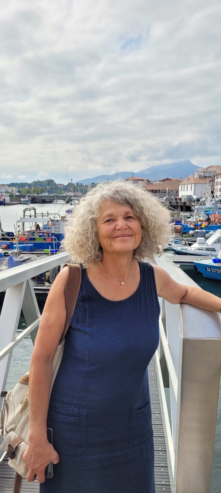

Écoute
Comprendre la demande et trouver un accord.
Qui suis-je ?
De l’amour de la lecture à celui de l’écriture, du plaisir de la rencontre et de l’échange à celui de l’écoute et du service. L’écrivain public écrit pour les autres et à la place des autres. Alors, aujourd’hui, j’écris à votre place, j’écris pour vous ou je vous fais écrire.

Présentation
Ma première activité ? Professeure de mathématiques et de sciences physiques. En parallèle, j’ai toujours écrit et corrigé des documents littéraires, techniques et scientifiques.
J’ai choisi cette activité d’écrivaine publique parce qu’elle conjugue des compétences diverses. Les ateliers d’écriture demandent un savoir-faire que j’ai acquis dans mon métier précédent. J’y ajoute une épice ludique.
L’écriture fait partie de ma vie depuis ma petite enfance, lorsque j’imitais ma mère qui écrivait des lettres debout devant le buffet. À l’internat, dès l’âge de dix ans, écrire des lettres était mon refuge contre l’ennui et la solitude.
Je relis, corrige et reformule, si nécessaire, vos thèses, rapports et romans. À votre écoute, je rédige pour vous discours, notes, lettres administratives ou personnelles, récits de vie, d’événements, de voyages et autres textes.
Spécialités
Comprendre la demande et trouver un accord.
Produire des textes clairs et structurés.
Respecter chacun selon la charte de déontologie de l’AEPF.